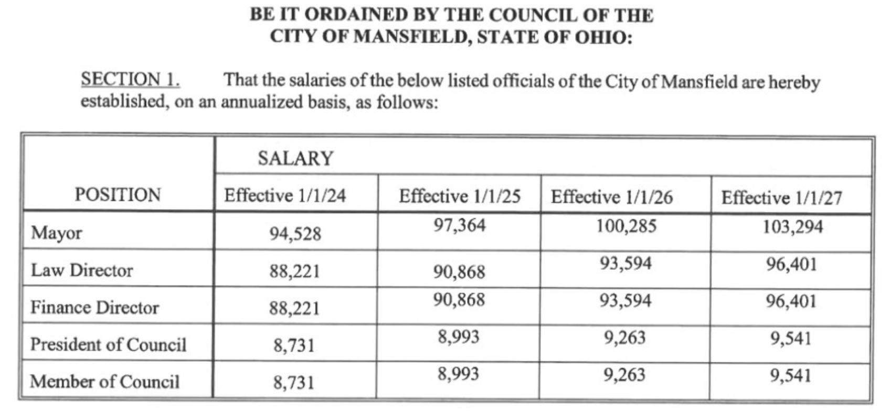

It's on the ballot. Vote YES on November 3, 2026 to repeal the excessive, automatic salary hikes in Warren, Ohio.
YES = Repeal. YES = Reform.
In the final days of 2023, Warren’s part-time City Council passed a law to double their own salaries. Worse, they tied future raises to the highest-paid city employee—creating a self-serving, automatic pay hike scheme. Meanwhile, Mansfield—a similar-sized "sister city"—pays its council members less than $10,000 annually.
This is not just greedy. It’s wrong. The citizens' petition succeeded and this question is now certified for the November 3, 2026 ballot. All that's left is to vote YES — and remind 10 friends, family, or neighbors to vote YES too.

Mansfield City Council members earn less than $10,000 annually. Warren City Council politicians make $20,765.92 as of May 2nd, 2025 with future increases coming.
In late 2023, Warren’s part-time City Council passed a law doubling their own salaries and tying future raises to the city's highest paid employee. This Citizens’ Initiative, now on the ballot, will:
Over 1,000 signatures got this certified for the November 3, 2026 general election ballot. Now it's up to voters.